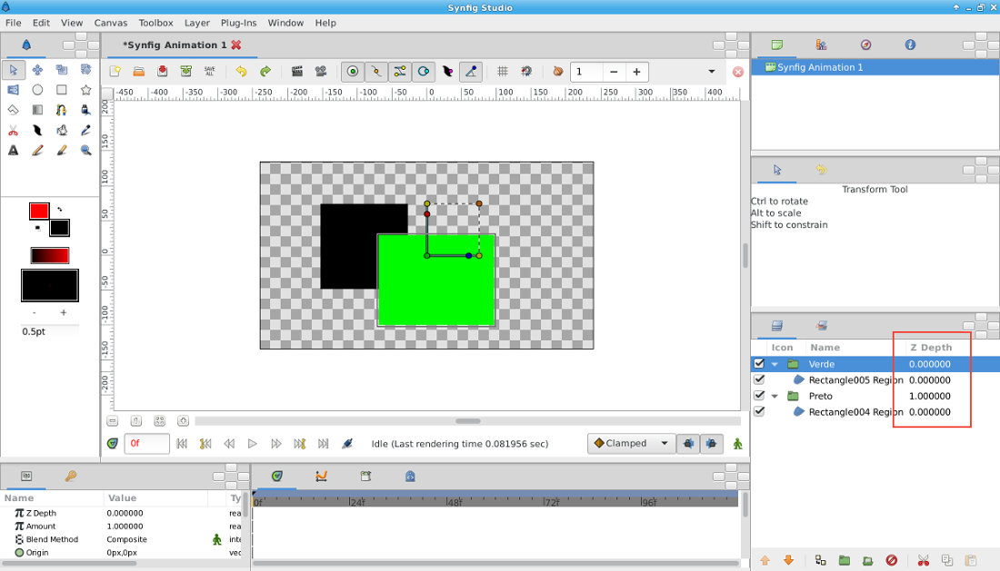
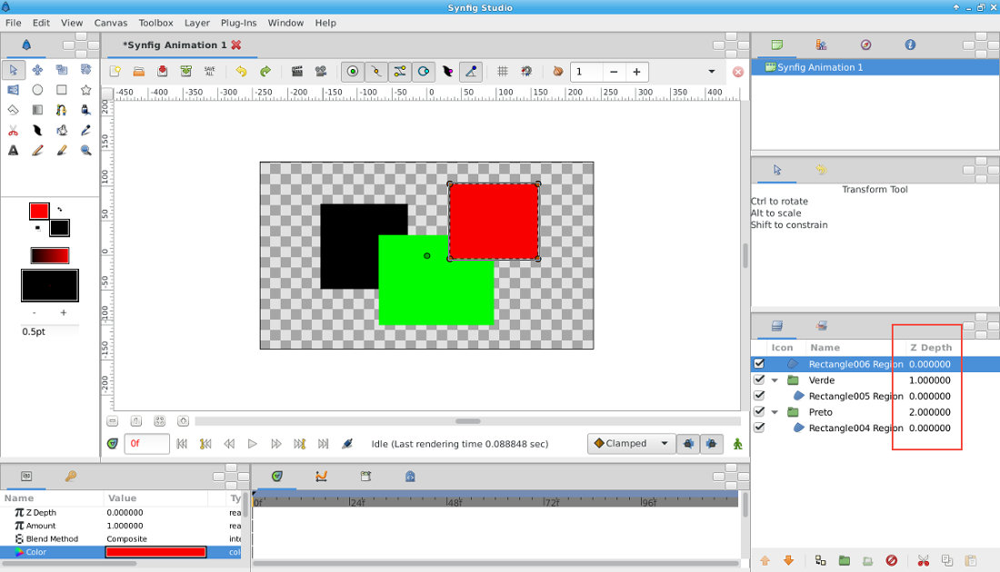
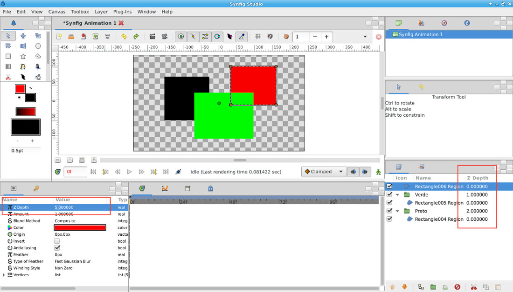
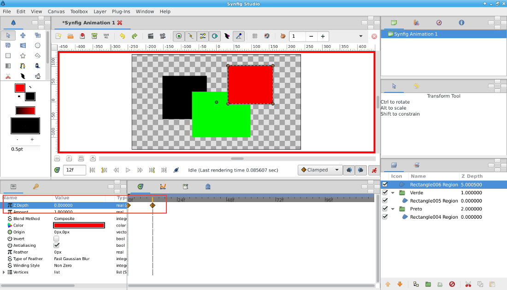

A hierarquia das layers traduz a proximidade da câmara. Por outras palavras, as layers que estiverem mais próximas do topo estão mais próximas da câmara e, portanto, surgem em cima das layers que estão mais em baixo (mais longe da câmara).
E se quisermos animar essa proximidade da câmara? Imagine um objeto que vai ficando progressivamente mais longe da câmara (com mais objetos sobrepostos) ou que se vai aproximando (com menos objetos sobrepostos).
1. Foram criados 2 retângulos (um preto e outro verde). Cada retângulo está no seu Group Layer. Na janela de layers, repare no valor Z Depth de cada Group Layer. Quanto mais elevado for o valor de Z Depth, mais afastado da câmara. Como o Group Layer Preto tem 1 e o Group Layer Verde tem 0, os objetos contidos dentro do Group Layer Verde surgem sobrepostos aos contidos no Group Layer Preto.
2. Desenhe um novo retângulo e coloque-o no topo da janela das Layers. Repare que os valores de Z Depth da janela de layers foram alterados para refletir a nova hierarquia: retângulo vermelho é o 0, o Group Verde é agora 1 e o Group Preto passou a 2.
3. Atente na janela de propriedades (lado esquerdo) onde estão presentes os diversos parâmetros de cada layer. Repare que todas as layers têm um valor de Z Depth nos seus parâmetros e que, por pré-definição, esse valor é 0. Ou seja, sempre que cria uma nova layer, esta automaticamente tem um Z Depth de 0.
O valor de Z Depth que surge na janela de layers é utilizado para hierarquizar facilmente objetos/layers que precisam de ser sempre hierarquizadas (duas layers não podem estar ao mesmo nível, uma tem de estar em cima ou em baixo da outra). Se não alterar o valor de Z Depth na janela de parâmetros, o valor de Z Depth da janela de layers altera-se de acordo com a hierarquia das layers.
No entanto, pode alterar manualmente o valor de Z Depth da layer na janela de parâmetros
4. E este valor nos parâmetros também pode ser animado...
